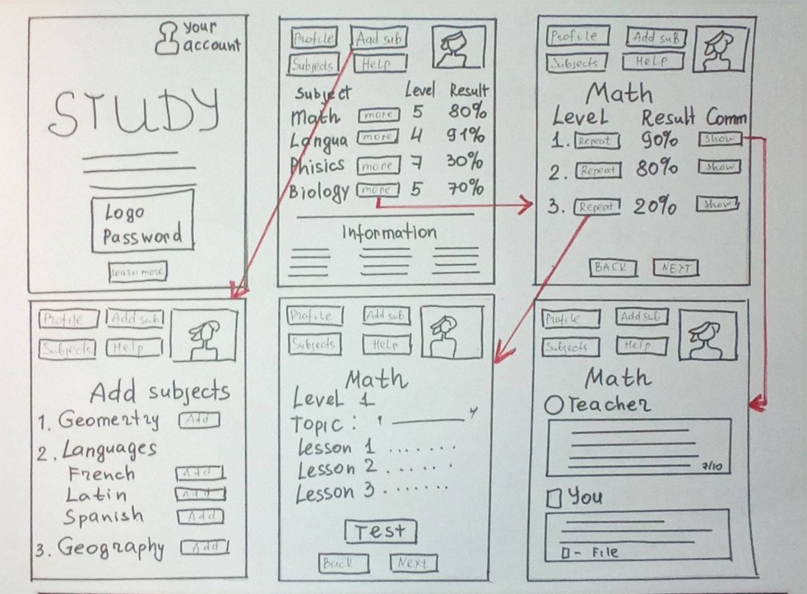
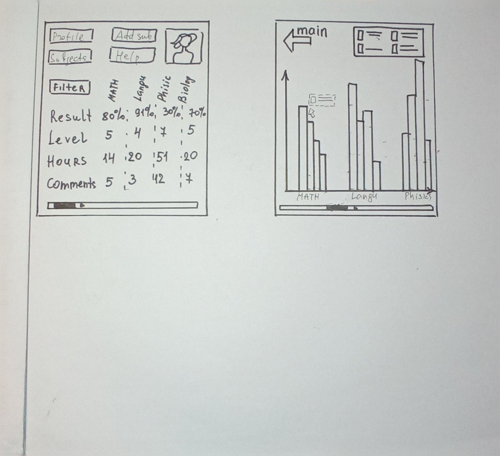

Wireframes
User task
The user task I am designing is Progress Tracking.
Users are able to track their progress
and receive feedback on their work to help them
improve and understand where they need to work harder.
User flow
Wireframes
The second screen from the left is the key screen.
 Reviewed by